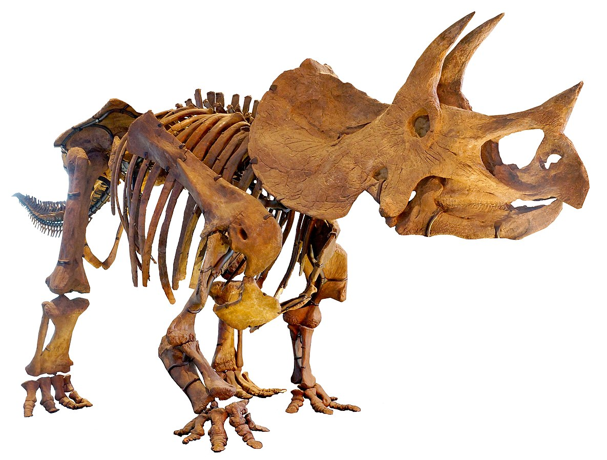

Los dinosaurios (Dinosauria, del griego δεινός deinós ‘terrible’ y σαῦρος sauros ‘lagarto’: ‘lagartos terribles’) son un grupo de saurópsidos78 que aparecieron durante el período Triásico. Aunque el origen exacto y su diversificación
temprana es tema de activa investigación,9 el consenso científico actual sitúa su origen entre 231 y 243 millones de años atrás.10 Fueron los vertebrados terrestres dominantes durante 135 millones de años, desde el inicio del Jurásico (hace unos 200 millones años) hasta el final del Cretácico (hace 66 millones de años), cuando la mayoría de los grupos de dinosaurios se extinguieron durante la extinción masiva del Cretácico-Paleógeno que puso fin a la Era Mesozoica. El registro fósil indica que las aves evolucionaron a partir de dinosaurios terópodos durante el período Jurásico y, en consecuencia, muchos taxónomos consideran que las aves forman un subgrupo dentro de los dinosaurios.11 Algunas aves sobrevivieron a este acontecimiento, y sus descendientes continúan el linaje de los dinosaurios hasta nuestros días.12
Los dinosaurios son un grupo diverso de animales desde el punto de vista taxonómico, morfológico y ecológico. Usando la evidencia fósil, los paleontólogos han identificado cerca de 500 géneros distintos13 y más de mil especies diferentes de dinosaurios no avianos.14 Los dinosaurios están representados en cada continente tanto por especies existentes como por restos fósiles.
El taxón Dinosauria fue formalmente nombrado en 1842 por el paleontólogo Sir Richard Owen, que lo utilizó para referirse a la «tribu distinta o sub-orden de los reptiles saurios» que luego fue reconocido en Inglaterra y en todo el mundo.17 El término deriva de las palabras griegas δεινός (deinós, que significa ‘terrible’, ‘potente’, o ‘gran temor’) y σαῦρος (sauros, que significa ‘lagarto’ o ‘reptil’).1718 Aunque el nombre taxonómico ha sido a frecuentemente interpretado como una referencia a los dientes, las garras, y otras características temibles de los dinosaurios, Owen pretendía simplemente evocar su tamaño y majestuosidad.19
Desde el punto de vista de la taxonomía filogenética, los dinosaurios se definen generalmente como el grupo constituido por todos los descendientes del más reciente ancestro común (ACMR) del Triceratops y las aves modernas.20 También se ha propuesto que Dinosauria se defina con respecto al ACMR de Megalosaurus e Iguanodon, porque se trataba de dos de los tres géneros citados por Richard Owen al reconocer la Dinosauria.21 Ambas definiciones incluyen el mismo grupo de animales: «Dinosauria = Ornithischia + Saurischia», que abarca los terópodos (en su mayoría carnívoros bípedos y aves), anquilosaurianos (cuadrúpedos herbívoros acorazados), estegosaurianos (cuadrúpedos herbívoros con placas en la espalda), ceratopsianos (herbívoros cuadrúpedos con cuernos y volantes), ornitópodos (herbívoros bípedos o cuadrúpedos, incluyendo a los "picos de pato"), y sauropodomorfos (en su mayoría grandes cuadrúpedos herbívoros de cuello y cola largos).22
En el siglo xxi, las aves se reconocen como las únicas supervivientes del linaje de los dinosaurios terópodos. En la taxonomía tradicional, las aves eran consideradas una clase separada que había evolucionado a partir de los dinosaurios, un superorden distinto. Sin embargo, la mayoría de los paleontólogos contemporáneos relacionados con los dinosaurios rechazan la clasificación de estilo tradicional en favor de la nomenclatura filogenética; este enfoque requiere que, para que un grupo sea natural, todos los descendientes de los miembros del grupo deben también incluirse en el grupo. Las aves están, por lo tanto, consideradas dinosaurios y estos últimos, por consiguiente, no se han extinguido. Las aves se clasifican como pertenecientes al subgrupo Maniraptora, que son coelurosaurios, que a su vez son terópodos, que a su vez son saurisquios, y que a su vez son dinosaurios.23
Los dinosaurios se pueden describir generalmente como arcosaurios con extremidades mantenidas erectas por debajo del cuerpo.24 Muchos grupos de animales prehistóricos son popularmente concebidos como dinosaurios, como los ictiosaurios, plesiosaurios, mosasaurios, pterosaurios y pelicosaurios (Dimetrodon), pero no se clasifican científicamente como dinosaurios, y ninguno tenía la postura característica de miembro erecto de los verdaderos dinosaurios.25 Los dinosaurios eran los vertebrados terrestres dominantes del Mesozoico, especialmente en los períodos Jurásico y Cretácico. Otros grupos de animales estaban restringidos en tamaño y nichos; los mamíferos, por ejemplo, rara vez superaban el tamaño de un gato, y se trataba generalmente de roedores carnívoros del tamaño de una pequeña presa.
Los dinosaurios siempre han sido un grupo muy variado de animales; según un estudio realizado en 2006, hasta esa fecha se habían identificado con certeza más de 500 géneros de dinosaurios no aviares, y se ha estimado en alrededor de 1850 el número total de géneros que se podrían conservar en el registro fósil, por tanto casi el 75% de los cuales aún no habría sido descubierto.13 Un estudio anterior predijo que existían alrededor de 3.400 géneros de dinosaurios, incluyendo muchos que no se han conservado en el registro fósil.27 A 17 de septiembre de 2008, se han nombrado 1.047 especies diferentes de dinosaurios.14 Algunos eran herbívoros, otros carnívoros, incluyendo granívoros, ictiófagos, insectívoros y omnívoros. Aunque los dinosaurios eran ancestralmente bípedos (al igual que todas las aves modernas), algunas especies prehistóricas eran cuadrúpedas, y otras, como Ammosaurus e Iguanodon, podían caminar con la misma facilidad en dos o cuatro patas. Las modificaciones craneales como cuernos y crestas son rasgos comunes de dinosaurios, y algunas especies extinguidas tenían armadura ósea. Aunque conocidos por su gran tamaño, muchos dinosaurios del Mesozoico eran del tamaño de un ser humano o menor, y las aves modernas son en general de pequeño tamaño. Hoy en día se encuentran dinosaurios enterrados en todos los continentes, y los fósiles muestran que habían logrado la distribución global por lo menos durante el período Jurásico temprano.15 Las aves modernas habitan en la mayoría de los hábitats disponibles, desde terrestres hasta marinos y existe evidencia de que algunos dinosaurios no aviares (como el Microraptor) podrían volar o al menos planear y otros, como los espinosáuridos, tenían hábitos semiacuáticos
A pesar de que algunos géneros desarrollaron adaptaciones que hicieron aún más pronunciadas las diferencias estructurales, esos rasgos básicos son considerados como típicos del superorden Dinosauria; dichas cualidades comunes a los miembros de un taxón (grupo taxonómico) reciben el nombre de sinapomorfias de dicho grupo.29
Una evaluación detallada de las interrelaciones entre arcosaurios de S. Nesbitt30 confirmaron o encontraron las siguientes doce sinapomorfias inequívocas, algunas conocidas previamente:
Nesbitt encontró una serie de potenciales nuevas sinapomorfías, y descontó un número de sinapomorfías sugeridas anteriormente. Algunos de estas también están presentes en los silesauridos , que Nesbitt recuperó como un grupo hermano de Dinosauria, incluyendo un gran trocánter anterior, metatarsianos II y IV de longitud subequal, reducción de contacto entre el isquion y el pubis, la presencia de una cresta cnemial en la tibia y de un proceso ascendente en el astrágalo, y muchos otros.20